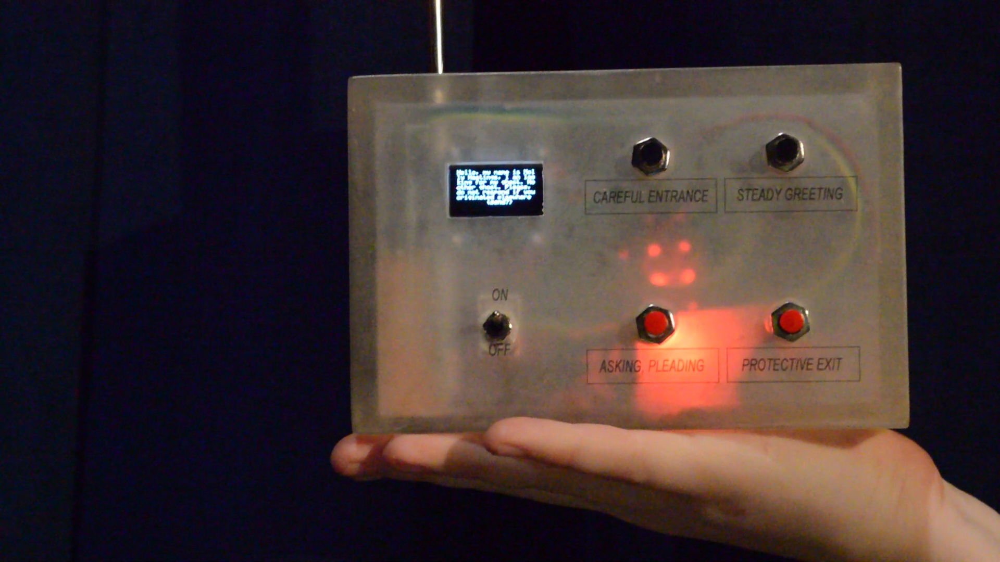

Based on a theory dubbed “Ghost in the Airwaves”, the Portable Broadcaster for the Post-Biotic
allows the dissemination of information from the biotic world into the post-biotic world through
an abiotic armature. It acts as a prosthetic voice to enable the user to communicate with personal
specters using bluetooth technologies. Messages are sent into the ether at a variety of frequencies,
and with no specific device to pair to the package of information travels the plane of its frequency
until it is absorbed. It is best used to find personal specters as opposed to large scale hunts, as
the frequencies only travel about 30 feet from the machine. If a specter is within the Portable
Broadcaster’s range of frequency and reach, it will absorb the package of information and may be
able to understand the data. The code includes a function to translate each message into several
different forms for increased probability of successful specter comprehension. Considering
the emotional weight of the personal specter, the Portable Broadcaster should be used safely
and in times of general stability. Though the technology hopes to reunite repressed ghosts &
separated bodies, it should be stated that such a conversation will certainly bring to light
whatever it was that the body could no longer hold. We, the team behind the Personal Broadcaster
for the Post-Biotic, advise extreme caution and ask that users refrain from contacting unfamiliar
specters.
WANT YOUR OWN? CLICK THIS LINK IN ORDER TO RECIEVE!!!!!!